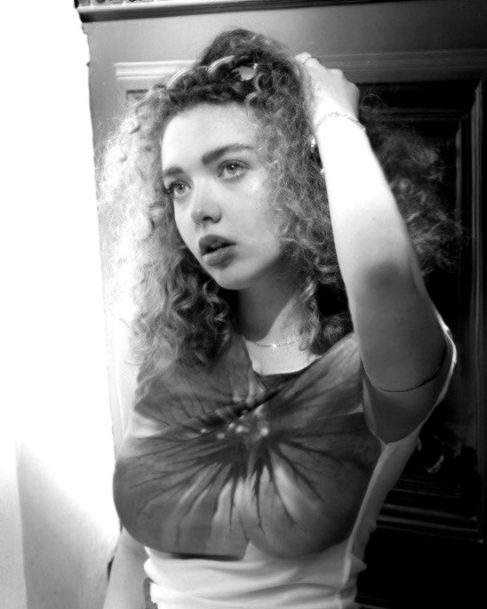
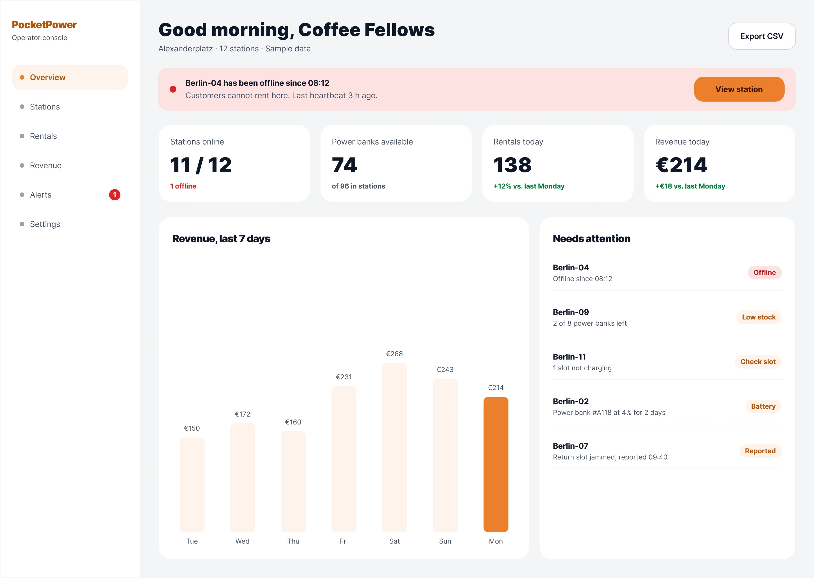
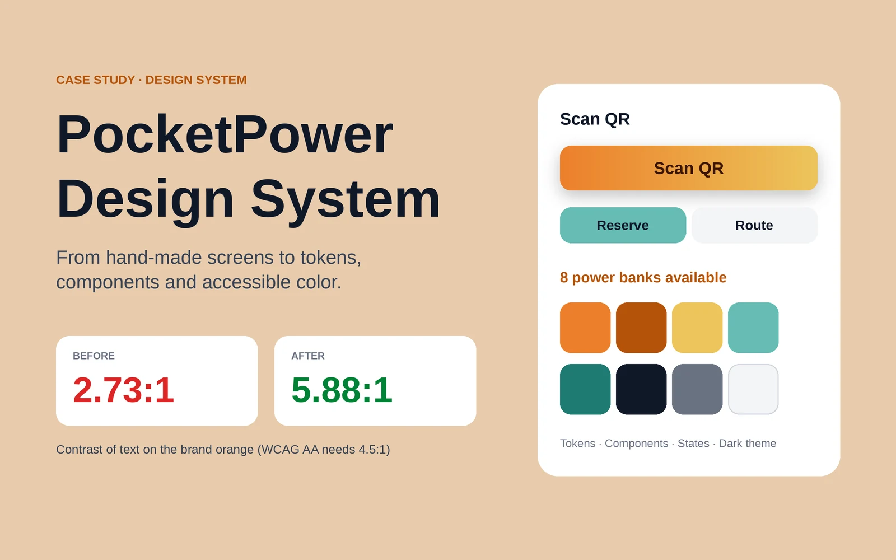

Anna
Khinchuk.
I'm a UX/UI designer and design student in Berlin. I design mobile apps and web products, build design systems, and care about clear flows and accessible color.

Selected work
Concept and student projects. Each case shows the problem, the process, the decisions and what I would test next.
PocketPower
A power bank rental app for Berlin. From finding a station to paying after the return, with the price visible at every step.
Ticket Finder
Buy a public transport ticket by saying where you are going. The app picks the cheapest valid one and explains why.
Anmeldung Assistant
A guide for newcomers to Berlin: documents, appointment slots and a ready form draft for registering an address.

↗PocketPower Operator Console
A web dashboard for the cafés that host stations. It answers one question first: is everything working?

↗PocketPower Design System
An audit of hand-made screens turned into tokens, components and accessible color. Contrast 2.73:1 → 5.88:1.
More projects
Earlier visual and interface work. Tap a tile to view it larger.
Hey, I'm Anna.
I study UX/UI design in my third semester at the University of Europe for Applied Sciences. I like turning confusing processes into clear flows, and I check my own work, from contrast ratios to edge cases.
Before design school I led a project team and built 3D models during an internship at an IT company. I also enjoy 3D modeling and game design, and I code a little in HTML and JavaScript to prototype ideas.